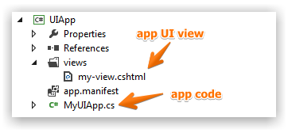
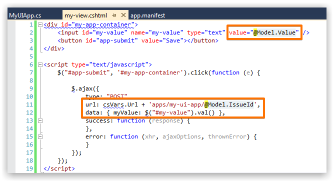
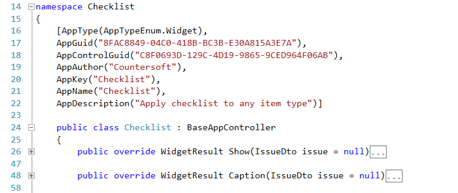
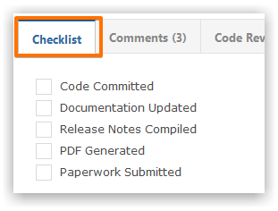
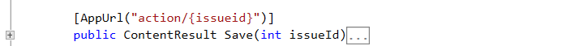
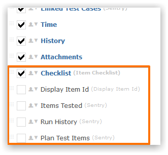
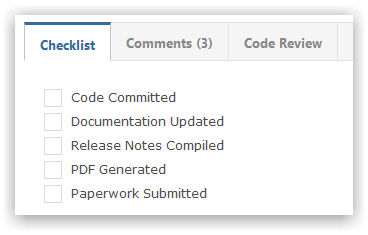

UI apps allow you to inject custom user interface sections within Gemini.
DownloadThe Countersoft GitHub repository contains sample applications that are built using the Apps Framework
Every UI app will consist of views that are displayed to users and custom app code.

ASP.NET Razor views are used to render HTML. The Model contains the data that can be rendered in the view.

Such views can also call custom logic on the server side (usually MVC Controller methods).
The Caption method will be called first, and it's used to get the app's title, such as Checklist.
The Show method will be called to get the app's contents, such as the grid in the Checklist app.

UI apps extends the BaseAppController object.
public class MyUiApp : BaseAppController
{
public MyUiApp()
{
[AppType(AppTypeEnum.Widget),
AppGuid("8FAC8849-04C0-418B-BC3B-E30A815A3E7A"),
AppControlGuid("C8F0693D-129C-4D19-9865-9CED964F06AB"),
AppAuthor("Countersoft"),
AppKey("Checklist"),
AppName("Checklist"),
AppDescription("Apply checklist to any item type")]
}
}
UI apps have a Show method that calls to display the contents of the app.
public override WidgetResult Show(IssueDto issue = null)
{
...
return new WidgetResult() { Success = true, Markup = new WidgetMarkup("views/checklist.cshtml", model) };
}
This would render Checklist on-screen.

The following code generates HTML mark-up using the data model.
result.Markup = new WidgetMarkup("views\\my-view.cshtml", data);
Note the use of IssueWidgetStore for loading and saving any custom data your app may require.
Custom UI views can call server-side logic using AJAX calls (as depicted above).
gemini_ajax.call("apps/checklist", "action", function (response)
{
if (response.Result.Data.success)
{
$("#checklist-app-container").html(response.Result.Data);
}
function (xhr, ajaxOptions, thrownError)
{
alert('FAILED, Status=' + xhr.status + ' -> ' + thrownError);
},
{ checkId: id, checkedState: checked }, null, true);
});
In the above example the localhost/Gemini/apps/action/{issueid} end-point is the callback to your custom logic.
Such custom callbacks are defined as follows in your App code.
The Save method fetches the checklist app data.

The above code follows the typical ASP.NET MVC controller approach.
Follow the packaging and deployment instructions to deploy UI app in Gemini.
Gemini Administrators can select when the custom UI app appears by changing screen setup for Project Templates.

When viewing an item you will be able to see your custom UI app.
